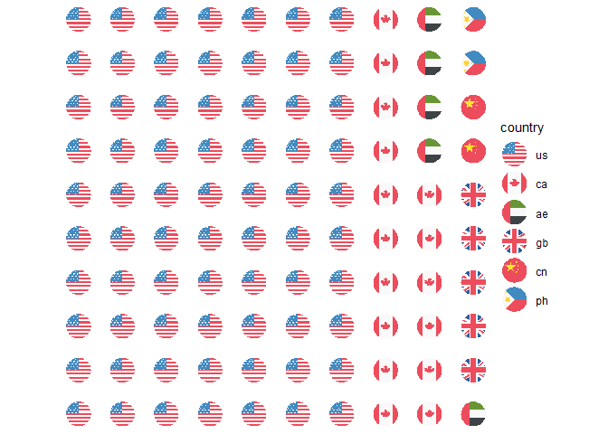

The goal of pubmedDashboard is to facilitate the creation of pretty data visualization dashboards using the flexdashboard and easyPubMed packages.
Installation
You can install the development version of pubmedDashboard like so:
# If `remotes` isn't installed, use `install.packages("remotes")`
remotes::install_github("rempsyc/pubmedDashboard")Basic Examples
pubmedDashboard helps parse the address to identify department and university of affiliation, as well as country.
library(pubmedDashboard)
address <- c(
"Department of Psychology, Cornell University, Ithaca, New York 14853-7601.",
"Dipartimento di Psicologia Generale, Università di Padova, Italy.",
"Universität Mannheim, Federal Republic of Germany.",
"Département de psychologie, Université du Québec à Montréal, Canada."
)
get_affiliation(address, "department")
#> [1] "Department of Psychology" "Dipartimento di Psicologia Generale"
#> [3] NA "Département de psychologie"
get_affiliation(address, "university")
#> [1] "Cornell University" "Università di Padova"
#> [3] "Universität Mannheim" "Université du Québec à Montréal"
get_country(address)
#> [1] "United States" "Italy" "Germany" "Canada"Mega Function
One simple function allows to download the paper data from PubMed, convert the XLM data to a dataframe, extract affiliations, match universities to countries, identify countries and continents, and save the file to disk for later reuse.
pubmed_query_string <- paste(
"passion [Title/Abstract]",
"AND Dualistic Model of Passion [Text Word]"
)
save_process_pubmed_batch(
pubmed_query_string,
year_low = 2023,
year_high = 2030
)
#> 1/5 - Downloading PubMed data...
#> [1] "PubMed data batch 1 / 1 downloaded..."
#> 2/5 - Converting XLM files to dataframe...
#> 3/5 - Extracting affiliations...
#> 4/5 - Matching universities to countries...
#> 5/5 - Identifying countries and continents...
#> Operation sucessfully completed. Congratulations!
#> File saved in data/articles_2023_2030.rdsTable formatting functions
Various functions allow to prepare DT tables to display specific information, such as journal paper percentages by continent or country.
data <- read_bind_all_data()
table_continent(data)
waffle_country(data)